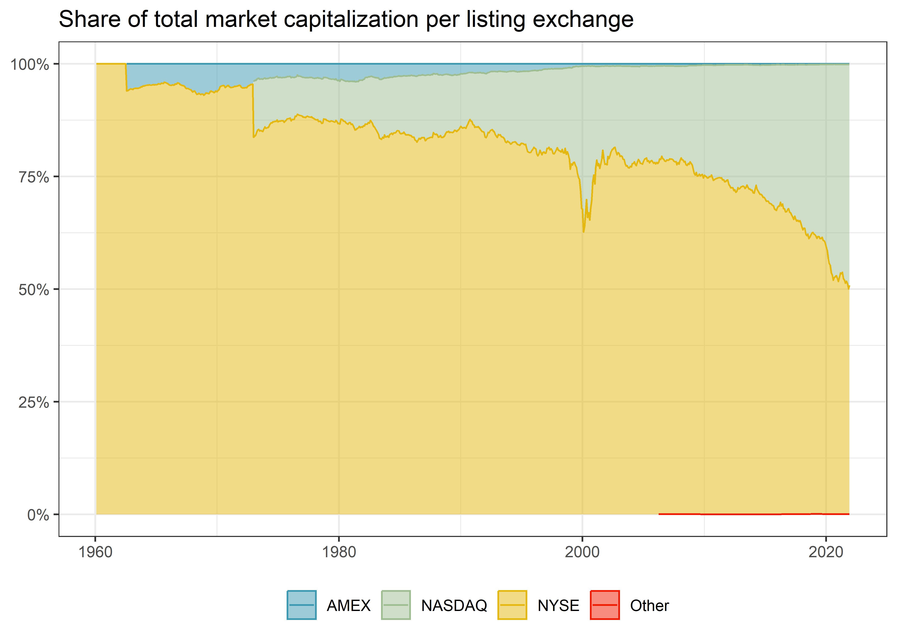

library(tidyverse)
library(RSQLite)
library(lubridate)
library(scales)
library(sandwich)
library(lmtest)
library(furrr)
library(rlang)Size Sorts and p-Hacking
In this chapter, we continue with portfolio sorts in a univariate setting. Yet, we consider firm size as a sorting variable, which gives rise to a well-known return factor: the size premium. The size premium arises from buying small stocks and selling large stocks. Prominently, Fama and French (1993) include it as a factor in their three-factor model. Apart from that, asset managers commonly include size as a key firm characteristic when making investment decisions.
We also introduce new choices in the formation of portfolios. In particular, we discuss listing exchanges, industries, weighting regimes, and periods. These choices matter for the portfolio returns and result in different size premiums Walter, Weber, and Weiss (2022). Exploiting these ideas to generate favorable results is called p-hacking. There is arguably a thin line between p-hacking and conducting robustness tests. Our purpose here is to illustrate the substantial variation that can arise along the evidence-generating process.
The chapter relies on the following set of packages:
Compared to previous chapters, we introduce the rlang package (Henry and Wickham 2022) for more advanced parsing of functional expressions.
Data Preparation
First, we retrieve the relevant data from our SQLite-database introduced in Chapters 2-4. Firm size is defined as market equity in most asset pricing applications that we retrieve from CRSP. We further use the Fama-French factor returns for performance evaluation.
tidy_finance <- dbConnect(
SQLite(),
"data/tidy_finance.sqlite",
extended_types = TRUE
)
crsp_monthly <- tbl(tidy_finance, "crsp_monthly") |>
collect()
factors_ff_monthly <- tbl(tidy_finance, "factors_ff_monthly") |>
collect()Size Distribution
Before we build our size portfolios, we investigate the distribution of the variable firm size. Visualizing the data is a valuable starting point to understand the input to the analysis. Figure 8.1 shows the fraction of total market capitalization concentrated in the largest firm. To produce this graph, we create monthly indicators that track whether a stock belongs to the largest x percent of the firms. Then, we aggregate the firms within each bucket and compute the buckets’ share of total market capitalization.
Figure 1 shows that the largest 1 percent of firms cover up to 50 percent of the total market capitalization, and holding just the 25 percent largest firms in the CRSP universe essentially replicates the market portfolio. The distribution of firm size thus implies that the largest firms of the market dominate many small firms whenever we use value-weighted benchmarks.
crsp_monthly |>
group_by(month) |>
mutate(
top01 = if_else(mktcap >= quantile(mktcap, 0.99), 1, 0),
top05 = if_else(mktcap >= quantile(mktcap, 0.95), 1, 0),
top10 = if_else(mktcap >= quantile(mktcap, 0.90), 1, 0),
top25 = if_else(mktcap >= quantile(mktcap, 0.75), 1, 0),
total_market_cap = sum(mktcap)
) |>
summarize(
`Largest 1% of stocks` = sum(mktcap[top01 == 1]) / total_market_cap,
`Largest 5% of stocks` = sum(mktcap[top05 == 1]) / total_market_cap,
`Largest 10% of stocks` = sum(mktcap[top10 == 1]) / total_market_cap,
`Largest 25% of stocks` = sum(mktcap[top25 == 1]) / total_market_cap,
.groups = "drop"
) |>
pivot_longer(cols = -month) |>
mutate(name = factor(name, levels = c(
"Largest 1% of stocks", "Largest 5% of stocks",
"Largest 10% of stocks", "Largest 25% of stocks"
))) |>
ggplot(aes(
x = month,
y = value,
color = name,
linetype = name)) +
geom_line() +
scale_y_continuous(labels = percent, limits = c(0, 1)) +
labs(
x = NULL, y = NULL, color = NULL, linetype = NULL,
title = "Percentage of total market capitalization in largest stocks"
)
Next, firm sizes also differ across listing exchanges. Stocks’ primary listings were important in the past and are potentially still relevant today. Figure 2 shows that the New York Stock Exchange (NYSE) was and still is the largest listing exchange in terms of market capitalization. More recently, NASDAQ has gained relevance as a listing exchange. Do you know what the small peak in NASDAQ’s market cap around the year 2000 was?
crsp_monthly |>
group_by(month, exchange) |>
summarize(mktcap = sum(mktcap),
.groups = "drop_last") |>
mutate(share = mktcap / sum(mktcap)) |>
ggplot(aes(
x = month,
y = share,
fill = exchange,
color = exchange)) +
geom_area(
position = "stack",
stat = "identity",
alpha = 0.5
) +
geom_line(position = "stack") +
scale_y_continuous(labels = percent) +
labs(
x = NULL, y = NULL, fill = NULL, color = NULL,
title = "Share of total market capitalization per listing exchange"
)
Finally, we consider the distribution of firm size across listing exchanges and create summary statistics. The function summary() does not include all statistics we are interested in, which is why we create the function create_summary() that adds the standard deviation and the number of observations. Then, we apply it to the most current month of our CRSP data on each listing exchange. We also add a row with add_row() with the overall summary statistics.
The resulting table shows that firms listed on NYSE in December 2021 are significantly larger on average than firms listed on the other exchanges. Moreover, NASDAQ lists the largest number of firms. This discrepancy between firm sizes across listing exchanges motivated researchers to form breakpoints exclusively on the NYSE sample and apply those breakpoints to all stocks. In the following, we use this distinction to update our portfolio sort procedure.
create_summary <- function(data, column_name) {
data |>
select(value = {{ column_name }}) |>
summarize(
mean = mean(value),
sd = sd(value),
min = min(value),
q05 = quantile(value, 0.05),
q50 = quantile(value, 0.50),
q95 = quantile(value, 0.95),
max = max(value),
n = n()
)
}
crsp_monthly |>
filter(month == max(month)) |>
group_by(exchange) |>
create_summary(mktcap) |>
add_row(crsp_monthly |>
filter(month == max(month)) |>
create_summary(mktcap) |>
mutate(exchange = "Overall"))# A tibble: 5 × 9
exchange mean sd min q05 q50 q95 max n
<chr> <dbl> <dbl> <dbl> <dbl> <dbl> <dbl> <dbl> <int>
1 AMEX 415. 2181. 7.57 12.6 75.8 1218. 2.57e4 145
2 NASDAQ 8651. 90038. 7.01 29.3 429. 18781. 2.90e6 2779
3 NYSE 17858. 48619. 23.9 195. 3434. 80748. 4.73e5 1395
4 Other 13906. NA 13906. 13906. 13906. 13906. 1.39e4 1
5 Overall 11349. 77458. 7.01 34.3 796. 40647. 2.90e6 4320Univariate Size Portfolios with Flexible Breakpoints
In Chapter 7, we construct portfolios with a varying number of breakpoints and different sorting variables. Here, we extend the framework such that we compute breakpoints on a subset of the data, for instance, based on selected listing exchanges. In published asset pricing articles, many scholars compute sorting breakpoints only on NYSE-listed stocks. These NYSE-specific breakpoints are then applied to the entire universe of stocks.
To replicate the NYSE-centered sorting procedure, we introduce exchanges as an argument in our assign_portfolio() function. The exchange-specific argument then enters in the filter filter(exchange %in% exchanges). For example, if exchanges = 'NYSE' is specified, only stocks listed on NYSE are used to compute the breakpoints. Alternatively, you could specify exchanges = c("NYSE", "NASDAQ", "AMEX"), which keeps all stocks listed on either of these exchanges. Overall, regular expressions are a powerful tool, and we only touch on a specific case here.
assign_portfolio <- function(n_portfolios,
exchanges,
data) {
breakpoints <- data |>
filter(exchange %in% exchanges) |>
summarize(breakpoint = quantile(
mktcap_lag,
probs = seq(0, 1, length.out = n_portfolios + 1),
na.rm = TRUE
)) |>
pull(breakpoint) |>
as.numeric()
assigned_portfolios <- data |>
mutate(portfolio = findInterval(mktcap_lag,
breakpoints,
all.inside = TRUE
)) |>
pull(portfolio)
return(assigned_portfolios)
}Weighting Schemes for Portfolios
Apart from computing breakpoints on different samples, researchers often use different portfolio weighting schemes. So far, we weighted each portfolio constituent by its relative market equity of the previous period. This protocol is called value-weighting. The alternative protocol is equal-weighting, which assigns each stock’s return the same weight, i.e., a simple average of the constituents’ returns. Notice that equal-weighting is difficult in practice as the portfolio manager needs to rebalance the portfolio monthly while value-weighting is a truly passive investment.
We implement the two weighting schemes in the function compute_portfolio_returns() that takes a logical argument to weight the returns by firm value. The statement if_else(value_weighted, weighted.mean(ret_excess, mktcap_lag), mean(ret_excess)) generates value-weighted returns if value_weighted = TRUE. Additionally, the long-short portfolio is long in the smallest firms and short in the largest firms, consistent with research showing that small firms outperform their larger counterparts. Apart from these two changes, the function is similar to the procedure in Chapter 7.
compute_portfolio_returns <- function(n_portfolios = 10,
exchanges = c("NYSE", "NASDAQ", "AMEX"),
value_weighted = TRUE,
data = crsp_monthly) {
data |>
group_by(month) |>
mutate(portfolio = assign_portfolio(
n_portfolios = n_portfolios,
exchanges = exchanges,
data = cur_data()
)) |>
group_by(month, portfolio) |>
summarize(
ret = if_else(value_weighted,
weighted.mean(ret_excess, mktcap_lag),
mean(ret_excess)
),
.groups = "drop_last"
) |>
summarize(size_premium = ret[portfolio == min(portfolio)] -
ret[portfolio == max(portfolio)]) |>
summarize(size_premium = mean(size_premium))
}To see how the function compute_portfolio_returns() works, we consider a simple median breakpoint example with value-weighted returns. We are interested in the effect of restricting listing exchanges on the estimation of the size premium. In the first function call, we compute returns based on breakpoints from all listing exchanges. Then, we computed returns based on breakpoints from NYSE-listed stocks.
ret_all <- compute_portfolio_returns(
n_portfolios = 2,
exchanges = c("NYSE", "NASDAQ", "AMEX"),
value_weighted = TRUE,
data = crsp_monthly
)
ret_nyse <- compute_portfolio_returns(
n_portfolios = 2,
exchanges = "NYSE",
value_weighted = TRUE,
data = crsp_monthly
)
tibble(
Exchanges = c("NYSE, NASDAQ & AMEX", "NYSE"),
Premium = as.numeric(c(ret_all, ret_nyse)) * 100
)# A tibble: 2 × 2
Exchanges Premium
<chr> <dbl>
1 NYSE, NASDAQ & AMEX 0.0975
2 NYSE 0.166 The table shows that the size premium is more than 60 percent larger if we consider only stocks from NYSE to form the breakpoint each month. The NYSE-specific breakpoints are larger, and there are more than 50 percent of the stocks in the entire universe in the resulting small portfolio because NYSE firms are larger on average. The impact of this choice is not negligible.
P-Hacking and Non-standard Errors
Since the choice of the listing exchange has a significant impact, the next step is to investigate the effect of other data processing decisions researchers have to make along the way. In particular, any portfolio sort analysis has to decide at least on the number of portfolios, the listing exchanges to form breakpoints, and equal- or value-weighting. Further, one may exclude firms that are active in the finance industry or restrict the analysis to some parts of the time series. All of the variations of these choices that we discuss here are part of scholarly articles published in the top finance journals. We refer to Walter, Weber, and Weiss (2022) for an extensive set of other decision nodes at the discretion of researchers.
The intention of this application is to show that the different ways to form portfolios result in different estimated size premiums. Despite the effects of this multitude of choices, there is no correct way. It should also be noted that none of the procedures is wrong, the aim is simply to illustrate the changes that can arise due to the variation in the evidence-generating process (Menkveld et al. 2021). The term non-standard errors refers to the variation due to (suitable) choices made by researchers. Interestingly, in a large scale study, Menkveld et al. (2021) find that the magnitude of non-standard errors are similar than the estimation uncertainty based on a chosen model which shows how important it is to adjust for the seemingly innocent choices in the data preparation and evaluation workflow.
From a malicious perspective, these modeling choices give the researcher multiple chances to find statistically significant results. Yet this is considered p-hacking, which renders the statistical inference due to multiple testing invalid (Harvey, Liu, and Zhu 2016).
Nevertheless, the multitude of options creates a problem since there is no single correct way of sorting portfolios. How should a researcher convince a reader that their results do not come from a p-hacking exercise? To circumvent this dilemma, academics are encouraged to present evidence from different sorting schemes as robustness tests and report multiple approaches to show that a result does not depend on a single choice. Thus, the robustness of premiums is a key feature.
Below we conduct a series of robustness tests which could also be interpreted as a p-hacking exercise. To do so, we examine the size premium in different specifications presented in the table p_hacking_setup. The function expand_grid() produces a table of all possible permutations of its arguments. Note that we use the argument data to exclude financial firms and truncate the time series.
p_hacking_setup <- expand_grid(
n_portfolios = c(2, 5, 10),
exchanges = list("NYSE", c("NYSE", "NASDAQ", "AMEX")),
value_weighted = c(TRUE, FALSE),
data = parse_exprs(
'crsp_monthly;
crsp_monthly |> filter(industry != "Finance");
crsp_monthly |> filter(month < "1990-06-01");
crsp_monthly |> filter(month >="1990-06-01")'
)
)To speed the computation up we parallelize the (many) different sorting procedures, as in the beta estimation of Chapter 6. Finally, we report the resulting size premiums in descending order. There are indeed substantial size premiums possible in our data, in particular when we use equal-weighted portfolios.
plan(multisession, workers = availableCores())
p_hacking_setup <- p_hacking_setup |>
mutate(size_premium = future_pmap(
.l = list(
n_portfolios,
exchanges,
value_weighted,
data
),
.f = ~ compute_portfolio_returns(
n_portfolios = ..1,
exchanges = ..2,
value_weighted = ..3,
data = eval_tidy(..4)
)
))
p_hacking_results <- p_hacking_setup |>
mutate(data = map_chr(data, deparse)) |>
unnest(size_premium) |>
arrange(desc(size_premium))
p_hacking_results# A tibble: 48 × 5
n_portfolios exchanges value_weighted data size_…¹
<dbl> <list> <lgl> <chr> <dbl>
1 10 <chr [3]> FALSE "filter(crsp_monthly… 0.0186
2 10 <chr [3]> FALSE "filter(crsp_monthly… 0.0182
3 10 <chr [3]> FALSE "crsp_monthly" 0.0163
4 10 <chr [3]> FALSE "filter(crsp_monthly… 0.0139
5 10 <chr [3]> TRUE "filter(crsp_monthly… 0.0115
# … with 43 more rows, and abbreviated variable name ¹size_premiumThe Size-Premium Variation
We provide a graph in Figure 3 that shows the different premiums. The figure also shows the relation to the average Fama-French SMB (small minus big) premium used in the literature which we include as a dotted vertical line.
p_hacking_results |>
ggplot(aes(x = size_premium)) +
geom_histogram(bins = nrow(p_hacking_results)) +
labs(
x = NULL, y = NULL,
title = "Distribution of size premiums for different sorting choices"
) +
geom_vline(aes(xintercept = mean(factors_ff_monthly$smb)),
linetype = "dashed"
) +
scale_x_continuous(labels = percent)
Exercises
- We gained several insights on the size distribution above. However, we did not analyze the average size across listing exchanges and industries. Which listing exchanges/industries have the largest firms? Plot the average firm size for the three listing exchanges over time. What do you conclude?
- We compute breakpoints but do not take a look at them in the exposition above. This might cover potential data errors. Plot the breakpoints for ten size portfolios over time. Then, take the difference between the two extreme portfolios and plot it. Describe your results.
- The returns that we analyse above do not account for differences in the exposure to market risk, i.e., the CAPM beta. Change the function
compute_portfolio_returns()to output the CAPM alpha or beta instead of the average excess return. - While you saw the spread in returns from the p-hacking exercise, we did not show which choices led to the largest effects. Find a way to investigate which choice variable has the largest impact on the estimated size premium.
- We computed several size premiums, but they do not follow the definition of Fama and French (1993). Which of our approaches comes closest to their SMB premium?
References
Fama, Eugene F., and Kenneth R. French. 1993. “Common risk factors in the returns on stocks and bonds.” Journal of Financial Economics 33 (1): 3–56. https://doi.org/10.1016/0304-405X(93)90023-5.
Harvey, Campbell R., Yan Liu, and Heqing Zhu. 2016. “\(\ldots\) and the cross-section of expected returns.” Review of Financial Studies 29 (1): 5–68. https://doi.org/10.1093/rfs/hhv059.
Hasler, Mathias. 2021. “Is the Value Premium Smaller Than We Thought?” Working Paper. https://ssrn.com/abstract=3886984.
Henry, Lionel, and Hadley Wickham. 2022. rlang: Functions for base types and core R and ’Tidyverse’ features. https://CRAN.R-project.org/package=rlang.
Menkveld, Albert J., Anna Dreber, Felix Holzmeister, Juergen Huber, Magnus Johannesson, Michael Kirchler, Sebastian Neusüss, Michael Razen, and Utz Weitzel. 2021. “Non-standard errors.” Working Paper. https://papers.ssrn.com/sol3/papers.cfm?abstract\%5Fid=3961574.
Soebhag, Amar, Bart Van Vliet, and Patrick Verwijmeren. 2022. “Mind Your Sorts.” Working Paper. https://di.org/10.2139/ssrn.4136672.
Walter, Dominik, Rüdiger Weber, and Patrick Weiss. 2022. “Non-standard errors in portfolio sorts.” Working Paper. https://ssrn.com/abstract=4164117.